Recherches
Je suis directeur de recherche à Inrae (centre de Montpellier). Mes domaines de recherche couvrent l’entomologie forestière et agricole avec un focus particulier sur la dynamique spatiale des ravageurs de l’échelle du paysage et à l’échelle continentale. Je m’intéresse aux invasions biologiques et à l’effet du changement climatique sur le risque phytosanitaire.
Changement climatique, invasions biologiques et risque phytosanitaire
Il est extrêmement difficile d’éviter l’introduction d’organismes nuisibles exotiques dans le contexte d’un commerce international sans cesse croissant. En revanche, il est possible d’améliorer substantiellement notre gestion des espèces envahissantes en renforçant la prévention, la surveillance et la sensibilisation du public. Connaître les régions qui sont - ou deviendront - favorables à une espèce est utile pour se préparer, c’est-à-dire évaluer le risque associé à son arrivée possible et réfléchir à des outils de gestion.
L’un des éléments importants à prendre en compte concerne l’aire de distribution géographique potentielle des espèces dont on redoute l’arrivée. Pour cela, un important effort de recherche est consacré à l’identification des facteurs environnementaux contrôlant les aires de distribution avec une attention particulière accordée aux facteurs climatiques. Réussir à cartographier les zones climatiquement favorables à une espèce permet d’anticiper son éventuelle expansion et ainsi de se faire une idée du danger qu’elle pourrait représenter en termes de dégâts agricoles.
Les modèles d’aire de distribution
Les modèles de distribution des espèces (SDM) sont des outils bien connus pour modéliser les niches climatiques des espèces et évaluer les zones offrant des conditions favorables. J’utilise ces outils pour évaluer le risque phytosanitaire et mieux comprendre les processus d’invasions biologiques. Le changement climatique se traduit par des modifications profondes des conditions environnementales auxquelles les espèces sont confrontées et les modèles d’aire de distribution permettent d’en évaluer l’effet sur la distribution potentielle des espèces envahissantes. C’est donc un moyen d’anticiper l’évolution du risque sous l’effet du changement climatique.
Le principe des SDM est simple et résumé dans la figure ci-dessous. Les données d’occurrences [localités où l’espèce est présente (cercles noirs) et lorsque ces informations sont disponibles, absente (cercles blancs)] sont associées à des données environnementales (souvent climatiques) pour construire un modèle statistique. Le modèle est ensuite utilisé pour estimer l’aire de distribution potentielle de l’espèce, c’est-à-dire les régions où elle pourrait se maintenir. Certaines sont déjà occupées, mais d’autres peuvent ne pas l’être si d’autres facteurs, tels que la présence de barrières à la dispersion, ont empêché la colonisation. Le modèle peut également être utilisé pour évaluer l’aire de distribution potentielle suivant les reconstitutions des climats passé ou l’estimation des climats futurs. Enfin, on peut utiliser de tels modèles pour estimer l’aire de distribution potentille d’une espèce hors de son aire de distribution actuelle et donc évaluer son expansion possible (climat actuel ou futur) en cas d’introduction.
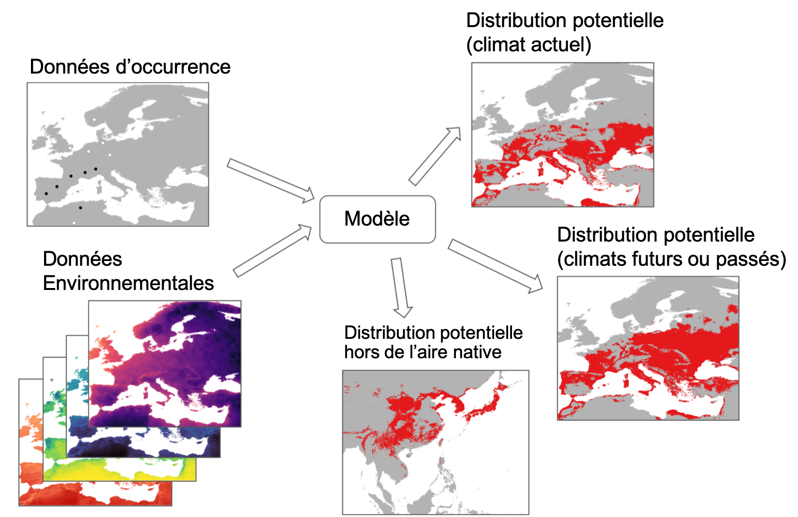
Principe des modèles d’aire de distribution (voir le texte pour les détails) (Rossi, non publié).
Quelques exemples
Il existe de nombreuses études basées sur les SDM et je vais illustrer ici l’approche à l’aide d’un petit nombre d’exemples d’insectes ravageurs. Guisan et al. (2017) fournissent une excellente synthèse accompagnée du code R permettant de mettre en œuvre les modèles ainsi que de nombreux exemples.
Les figures ci-dessous illustrent la distribution potentielle des espèces suivantes : - la punaise diabolique Halyomorpha halys selon les conditions climatiques actuelles - la mouche pisseuse Homalodisca vitripennis, un vecteur de la bactérie Xylella fastidiosa, pour la période 2021-2040 - la chenille processionnaire du pin Thaumetopoea pityocampa durant le dernier maximum glaciaire (-21000 ans).
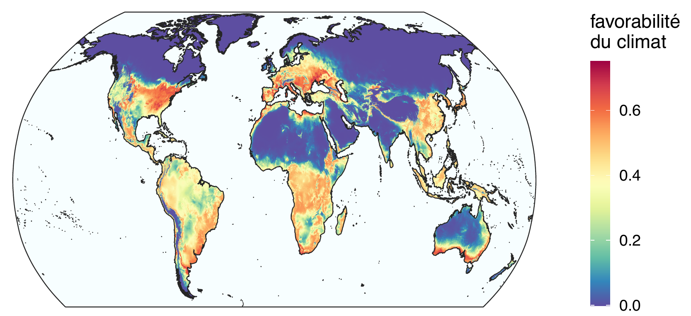
Aire de distribution potentielle de la punaise diabolique Halyomorpha halys* dans les conditions climatiques actuelles (2021). La carte représente l’indice de favorabilité produit par le modèle. Plus l’indice est élevé, plus les conditions sont favorables. Modifié d’après Streito et al. (2021).*
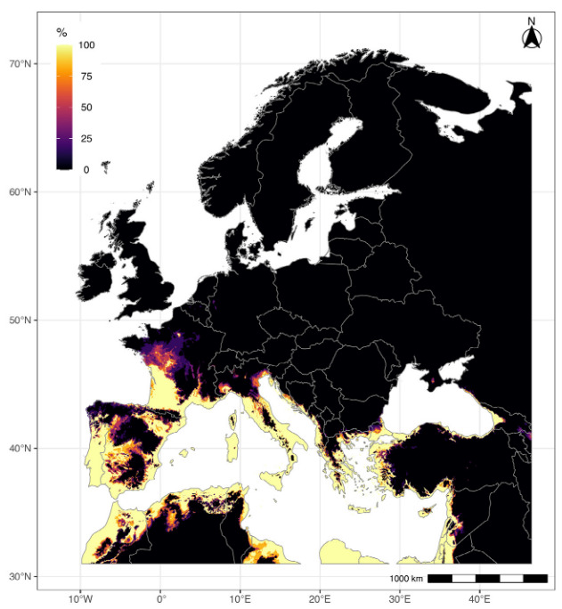
Carte de distribution potentielle de la mouche pisseuse Homalodisca vitripennis* en Europe pour la période 2021-2040. Cette espèce n’est pas présente en Europe à l’heure actuelle. L’indice représenté correspond à la proportion de modèles indiquant des conditions climatiques favorables. Voir Rossi et Rasplus (2023) pour les détails.*
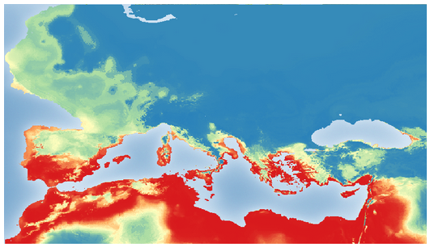
Reconstitution de l’aire de distribution potentielle de la chenille processionnaire du pin Thaumetopoea pityocampa* en Europe lors du dernier maximum glaciaire il y a -21000 ans. Les conditions favorables correspondent à la couleur rouge, les conditions défavorables au bleu. On retrouve sur cette carte, les zones refuges identifiées avec les données génétiques (Rossi et collègue, en préparation).*
Les choses se compliquent avec les structures infra-spécifiques : le cas de Xylosandrus crassiusculus
Les modèles d’aire de distribution sont généralement calibrés à l’échelle de l’espèce, mais certains auteurs soulignent que cette pratique limite les capacités du modèle à prendre en compte efficacement les adaptations locales telles que celles qui peuvent avoir lieu aux marges des aires de distribution. Certaines espèces regroupent de différents clades, c’est-à-dire de sous-ensembles génétiquement différenciés. Lorsque ces clades correspondent à des populations ayant des caractéristiques écologiques différentes, les analyses de risque à l’échelle de l’espèce sont insuffisamment précises.
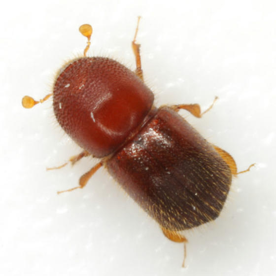
Xylosandrus crassiusculus
Photo O. Denux/INRAE
Le scolyte envahissant Xylosandrus crassiusculus nous fournit un bon exemple de cette situation. X. crassiusculus est un scolyte originaire d’Asie récemment introduit en Europe. Cet insecte xylophage est généraliste, il vit sous l’écorce des arbres et creuse de nombreuses galeries dans le bois et représente de ce fait une menace importante pour de nombreuses espèces végétales. Des travaux de génétique des populations basés sur des marqueurs ADN mitochondriaux et nucléaires ont montré que cette espèce est composée de deux clades génétiquement différentiés et que ces entités sont distribuées dans des aires géographiques partiellement disjointes. En Europe, les résultats montrent qu’un seul de ces deux clades génétiques a jusqu’à présent été détecté.
Si l’on construit un modèle d’aire de distribution pour chaque clade, on observe que les conditions climatiques actuelles de l’Europe sont en fait favorables aux deux clades. Le clade actuellement absent pourrait ainsi s’établir sur le continent s’il venait à être introduit. Par ailleurs, le clade présent n’occupe qu’une partie limitée des régions dans lesquelles le climat lui permet de se développer, ce qui signifie que l’expansion de X. crassiusculus ne fait probablement que commencer.
La figure ci-dessous illustre l’aire de distribution potentielle des deux clades de l’espèce X. crassiusculus.
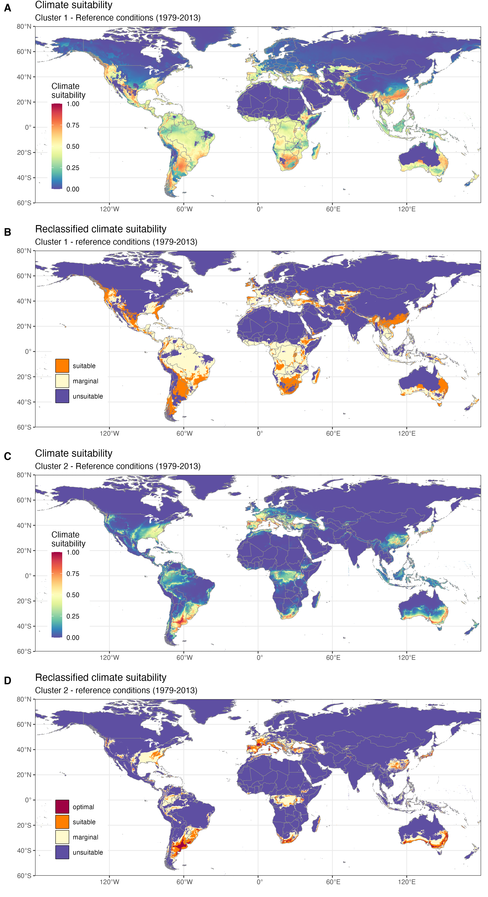
Favorabilité du climat (1979-2013) pour deux lignées génétiques de Xylosandrus crassiusculus. A. Indice de favorabilité pour le clade 1. B. Indice de favorabilité pour le clade 1 dégradé en 3 classes (favorable, marginalement favorable et défavorable). C. Indice de favorabilité pour le clade 2. D. Indice de favorabilité pour le clade 2 dégradé en 4 classes (optimal, favorable, marginalement favorable et défavorable). D’après Urvois et al. (2024).
L’introduction récente de X. crassiusculus en Europe, est-elle liée au changement climatique ? Si l’accroissement des échanges commerciaux est connu pour être responsable d’une plus grande circulation des espèces envahissantes, le rôle du changement climatique est moins clair. L’analyse rétrospective de la favorabilité du climat du siècle passé permet déterminer dans quelle mesure l’évolution du climat en Europe peut expliquer l’établissement récent du scolyte. Les résultats montrent que le climat était déjà favorable à cette espèce au cours du 20ème siècle (figure ci-dessous), ce qui suggère que la colonisation récente du continent est plutôt liée à l’accroissement des échanges commerciaux transnationaux qu’à des changements environnementaux.
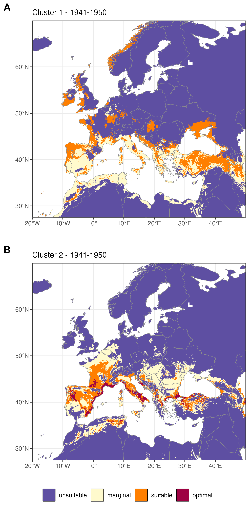
Favorabilité du climat pour les deux lignées génétiques de Xylosandrus crassiusculus* au cours de la période 1941-1950. A. clade 1. B. Clade 2. D’après Urvois et al. (2024).*
La projection des modèles selon différents scénarios de changement climatique permet d’évaluer l’évolution des zones à risque au cours des prochaines décennies. Le réchauffement climatique pourrait déplacer les zones favorables à l’insecte vers le nord de l’Europe. Certains ports de commerce parmi les plus actifs dans le transit des grumes, tels que Rotterdam ou Amsterdam, pourraient alors devenir climatiquement favorables. Ce scénario illustre clairement comment le changement climatique et le commerce international pourraient agir en synergie pour favoriser l’introduction et l’établissement des espèces envahissantes.
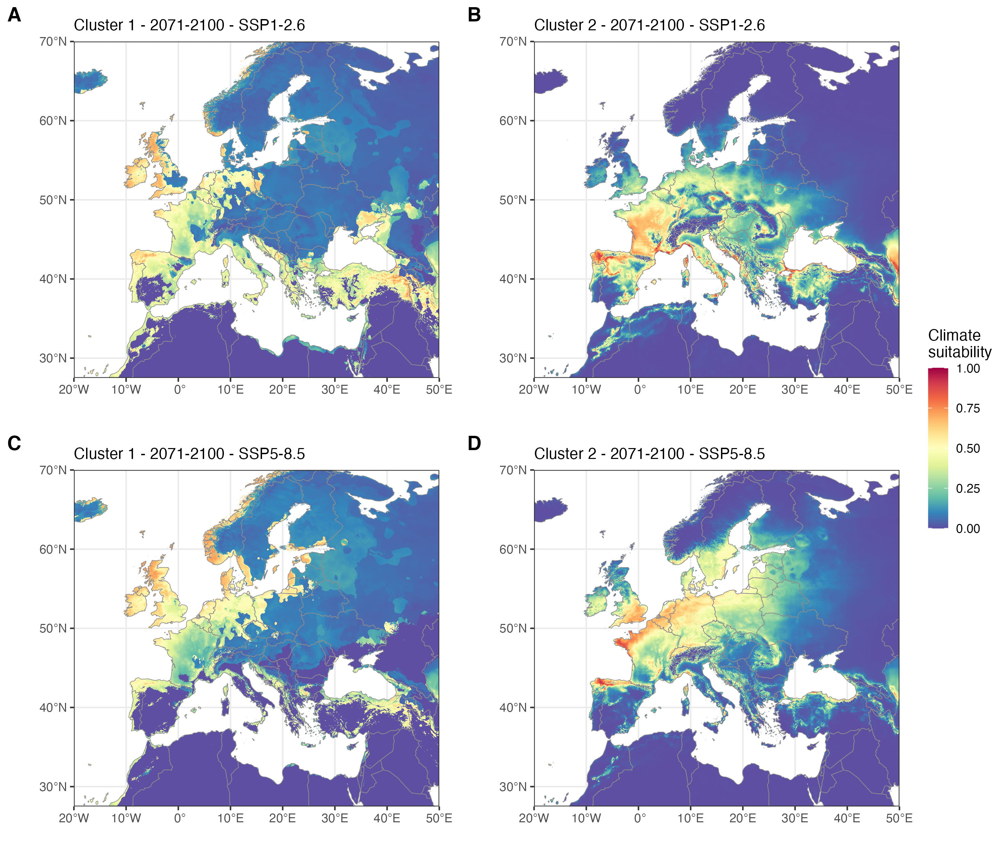
Favorabilité du climat pour deux lignées génétiques (clades) du scolyte Xylosandrus crassiusculus* pour la période 2071-2100 et deux scénarios d’évolution des émissions de gaz à effet de serre SSP-2.6 et SSP-8.5 dans certaines parties de l’Europe et de la région méditerranéenne. Les cartes représentent le consensus dérivé de la médiane du modèle projeté en utilisant cinq GCM pour chaque SSP (voir Urvois et al. (2024) pour les détails). A. Favorabilité climatique pour le clade 1 en 2071-2100 dans le cadre du SSP1-2.6. B. Favorabilité climatique pour le clade 2 en 2071-2100 dans le cadre du SSP1-2.6. C. Favorabilité climatique pour le clade 1 en 2071-2100 dans le cadre du SSP5-8.5. D. Favorabilité climatique pour le clade 2 en 2071-2100 dans le cadre du SSP5-8.5. D’après Urvois et al. (2024).*
Les travaux réalisés sur X. crassiusculus illustrent comment une approche pluri-disciplinaire alliant génomique des populations et modélisation écologique permettent d’identifier les patrons d’organisation géographique de la diversité génétique et comment cette connaissance peut être mobilisée pour améliorer l’évaluation du risque et la préparation aux invasions biologiques.
Impact du paysage sur la dynamique spatiale des bioagresseurs
L’échelle du paysage est l’échelle spatiale privilégiée pour comprendre la dynamique des populations d’insectes et les relations avec l’hétérogénéité environnementale (i.e. la structure et la composition du paysage). De nombreuses options de gestion et d’aménagement du territoire sont envisagées à cette échelle qui est également l’échelle à laquelle on réalise les inventaires destinés à suivre l’évolution de la santé des forêts et des cultures et identifier d’éventuels foyers de prolifération d’organismes ravageurs.
La processionnaire du pin dans les paysages de grandes cultures
Dans le cas des bioagresseurs forestiers, il est important de dépasser le cadre strict des forêts et d’intégrer les autres compartiments du paysage pour comprendre la dynamique globale. La processionnaire du pin est un excellent modèle biologique pour explorer ces questions. Cette espèce, native du sud de l’Europe, est en expansion vers le nord du continent sous l’effet du réchauffement climatique (Roques, 2015). Depuis une quarantaine d’années, le front d’expansion a traversé la région Centre de la France et notamment ses grandes régions agricoles, telles que la Beauce, dont le couvert forestier est extrêmement limité. Comment T. pityocampa a-t-elle réussi à coloniser d’immenses territoires dépourvus de forêts ?
J’ai abordé cette question en collaboration avec Jérôme Rousselet de l’unité de zoologie forestière INRAE d’Orléans. Nous avons analysé des données de recensement exhaustif des arbres hôtes de la processionnaire du pin dans une parcelle de 22 km par 22 km situées en Beauce (figure ci-dessous).
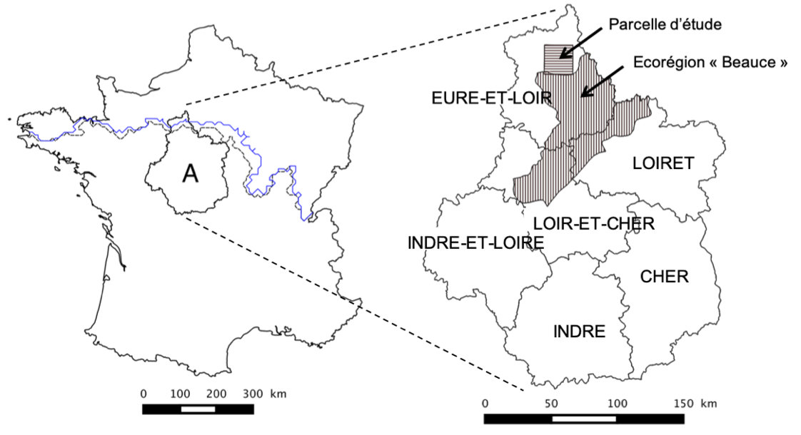
Zone d’étude. A) Position de la région Centre en France. Le front de progression de le processionnaire est représenté en noir pour l’année 2006 et en blue pour l’année 2010. B) Différents départements de la région Centre et position de la parcelle d’étude et l’écorégion “Beauce”.
Nous avons ensuite construit un modèle statistique reliant la probabilité d’occurrence d’un arbre hôte en fonction de la distance au plus proche élément bâti (figure ci-dessous A : arbres, B : bâti, D: distance arbre-plus proche bâti). Cette relation, très forte, traduit le fait que les habitants plantent des conifères à proximité des habitations dans un but ornemental (détails dans Rossi et al. 2016a).
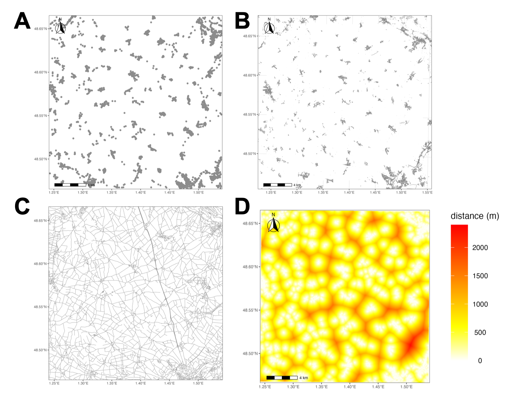
Principe du modèle développé. A) Distribution des arbres étudiés (inventaire exhaustif) B) Elements bâti (données IGN) C) Réseau routier (données IGN) D) Covariable “distance au plus proche élément bâti”. Modifié d’après Rossi et al. (2013, 2016).
Il est possible d’utiliser ce modèle pour estimer la distribution des arbres hors forêt hôtes de la processionnaire dans une grande région agricole correspondant à l’écorégion Beauce de la région centre (figure ci-dessous). L’Inventaire Forestier National (IFN) indique que le couvert forestier est très limité dans cette région (planche du haut) mais si l’on ajoute la distribution des arbres hors forêt simulée par le modèle, on constate que l’ensemble de la zone étudiée contient des hôtes de la processionnaire. Ceci traduit simplement la présence de zones de bâti autour desquelles des arbres ornementaux sont plantés.
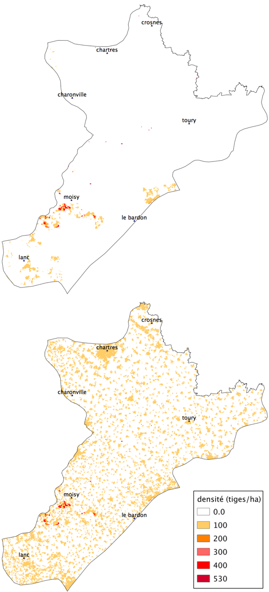
Distribution des arbres hôtes de la processionnaire du pin dans l’écorégion “Beauce”. En haut, distribution établie par l’Inventaire Forestier National (IFN). En bas. Somme des densités d’arbres recensés par l’IFN et estimées par le modèle.
La conclusion de ce travail est que la processionnaire ne rencontre aucun problème de disponibilité d’hôtes dans les zones agricoles telle que la Beauce parce que les arbres ornementaux sont distribués de façon homogène. Les densités sont faibles, mais la couverture spatiale est complète ce qui permet l’expansion géographique du papillon.
… et dans les villes
Tout comme les zones rurales, les milieux urbains et péri-urbains abritent des arbres hors forêts que l’on appelle arbres urbains. Ces arbres jouent un rôle important dans la qualité de vie en ville, mais peuvent également poser des problèmes (on parle de “disservices écosystémiques”) en produisant des pollens allergènes ou en abritant des espèces représentant un danger pour la santé publique. C’est le cas des processionnaires du pin et du chêne dont les chenilles urticantes peuvent causer des légions très sévères aux animaux domestiques et des allergies chez l’homme. Pour de telles espèces, une bonne connaissance de la distribution des arbres en ville permet le suivi de l’infestation et l’élaboration de cartes de risque à l’échelle des agglomérations (figure ci-dessous). Ces cartes servent à améliorer l’information du public et mieux gérer la lutte contre l’insecte (Rossi et al 2016b).
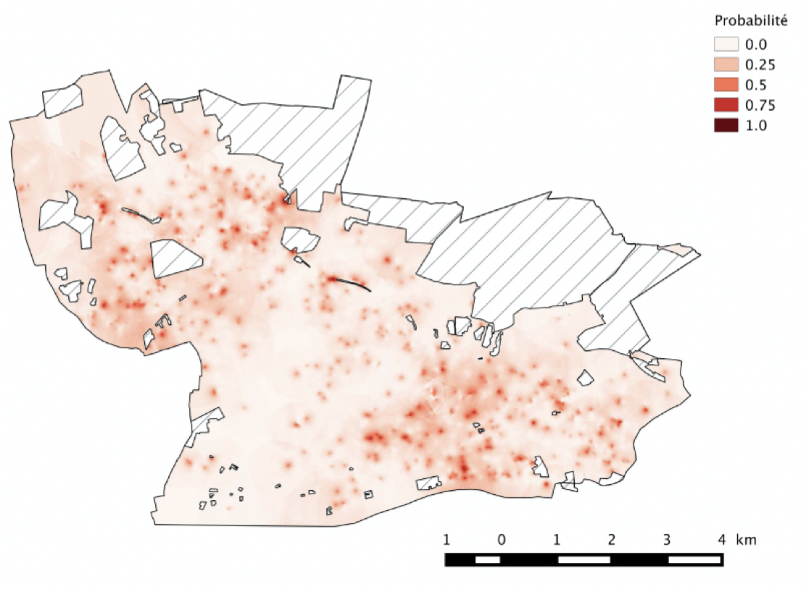
Cartes de probabilité de présence de nids de processionnaires du pin. Les valeurs cartographiées ont été estimées par krigeage ordinaire à l’aide de variogrammes indicateurs ajustés pour la valeur seuil Zk = 0. Les valeurs correspondent aux probabilités d’observation d’abondances >0, c’est-à-dire aux probabilités de présence. Le grain de la carte est de 25 × 25 m (Rossi et al. 2016b)
Le choix des essences plantées dans les zones urbaines et péri-urbaines joue un rôle majeur dans la dynamique des infestations par la processionnaire du pin. Choisir des essences peu ou pas attaquées constitue un excellent moyen d’éviter de favoriser l’insecte en lui fournissant des ressources trophiques de bonne qualité. La figure ci-dessous illustre les préférences observées dans la ville d’Orléans pour 11 groupes d’arbres.
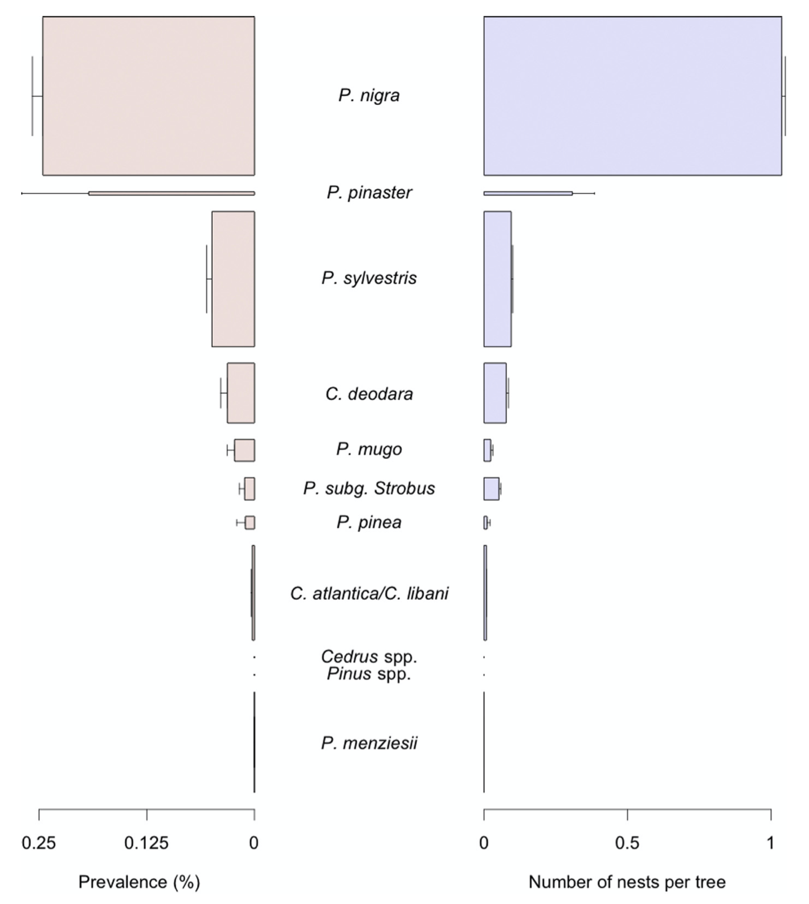
Prévalence et nombre de nids de la processionnaire du pin Thaumetopoea pityocampa* observés dans 11 taxa d’arbres dans la ville d’Orléans. La prévalence est définie comme la fréquence d’arbres présentant au moins un nid. Les arbres sont classés par ordre décroissant de prévalence du haut vers le bas du graphique. Les barres sont proportionnelles à l’abondance des taxa d’arbres. Les barres d’erreur indiquent l’erreur standard. D’après Rossi et al. (2016b).*
Le projet OSTils achevé en 2023, a produit des données supplémentaires sur la distribution de la processionnaire du pin dans trois villes françaises au climat contrasté : La Baule, Montpellier et Orléans. Consulter la page du projet.
Evaluer le risque, anticiper et se préparer aux crises sanitaires en santé du végétal
Bioagresseurs
L’émergence d’un ravageur, qu’il soit exotique (donc issu d’une invasion biologique) ou non, représente dans certains cas un risque important en agriculture. L’évaluation du risque, si possible avant qu’une situation de crise ne se déclare, se heurte au caractère intrinsèquement incertain, imprévisible et irrégulier de l’aléa. C’est portant un élément clef d’une gestion efficace ! Apprécier le risque demande une bonne connaissance de l’espèce concernée, du contexte environnemental et économique ainsi que de techniques de détection fiables et efficaces. On l’a vu plus haut, la modélisation apporte également des éléments de réflexion importants.
Lorsqu’une crise sanitaire liée à un nouveau bioagresseur survient, il est malheureusement rare que l’on dispose de l’ensemble des informations utile pour gérer efficacement le problème, or la rapidité est un élément déterminant. La crise déclenchée par la détection de la bactérie Xylella fastidiosa en France en 2015 fournit un bon exemple de manque de préparation. Cette bactérie, considérée comme extrêmement dangereuse, avait été détectée deux ans auparavant en Italie où elle avait causé d’immenses dégâts dans les oliveraies de la région des Pouilles. Pourtant, deux ans plus tard, les connaissances disponibles en France à propos des insectes capables de transmettre cette maladie, ainsi que les techniques de détection de la bactérie modernes restaient très limitées.
L’évaluation et l’anticipation des risques phytosanitaires représentent des éléments clé de la stratégie de gestion des bioagresseurs des cultures et des forêts.
Le risque
Les risques sont de nature différente suivant les systèmes de production agricole concernés et se distinguent par leur origine, leur fréquence, leur intensité, ainsi que par les moyens de prévention envisageables. Ces différents risques sont également en interaction (approches multi-risques), ce qui amplifie parfois leurs effets et complique leur anticipation.
Chevassus-au-Louis (2007) définit le risque comme un phénomène non inéluctable ayant des effets considérés comme dommageables pour la société. Il est à noter que la notion de dommage, et avec elle l’idée de risque, reposent ici sur une appréciation sociale de la situation. Le GIEC (Groupe International d’Experts sur le Climat) rejoint cette vision en définissant un risque comme la probabilité d’occurrence d’un événement dangereux croisée avec un terme d’impact. Il envisage la notion de risque comme résultante de l’interaction entre aléas, exposition et vulnérabilité du système considéré (IPCC, 2014).
La figure ci-dessous illustre la notion de risque exprimée dans le cadre des risques liés aux bioagresseurs.
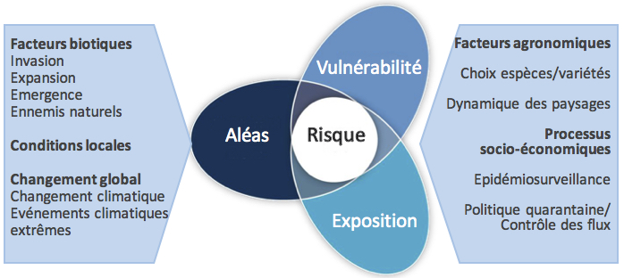
Schéma conceptuel des risques biotiques (modifié d’après GIECC, 2014) (Rossi et al. 2019)
Dans le cas des risques biotiques considérés ici, les principaux aléas concernent l’invasion, l’expansion et l’émergence de bioagresseurs. Le changement climatique - sans oublier la survenue d’événements extrêmes - a également un impact potentiellement important. L’exposition rend compte de facteurs agronomiques tels que le choix des espèces ou variétés cultivées et la dynamique des paysages qui y sont associés. Ces facteurs affectent également la vulnérabilité du système, car les capacités de résilience dépendent de l’ensemble des conditions abiotiques et biotiques locales qui affecte l’état physiologique des plantes et donc leur sensibilité face à des problèmes phytosanitaires. La biodiversité locale conditionne la présence d’organismes auxiliaires.
Certaines interactions affectent l’estimation du risque : par exemple, les aléas climatiques peuvent directement influencer l’émergence d’un ravageur, tout en altérant la vulnérabilité de la culture concernée en agissant sur son état physiologique, voire son exposition en modulant sa phénologie. Les processus socio-économiques agissent sur tous les éléments modulant les risques liés aux bioagresseurs. L’importance économique d’une culture conditionne le niveau d’exposition tandis que le volume des échanges commerciaux peut potentiellement influencer la probabilité d’introduction de nouveaux ravageurs. Le risque associé aux bioagresseurs dépend également des mesures d’épidémiosurveillance, de contrôle des flux et les politiques de quarantaine. Au-delà de mesures préventives, l’efficacité des traitements curatifs existants et l’investissement dans la recherche pour les améliorer ont également un impact sur le risque encouru.
La préparation
Jules César
La préparation au risque associée à l’émergence de bioagresseurs repose sur l’identification des espèces susceptibles de provoquer des crises sanitaires. On parle en anglais d’ « horizon scanning » pour designer la procédure de recherche systématique aboutissant à une liste d’espèces ordonnée par valeur du risque d’arrivée, d’établissement, expansion et de dommages. Roy et al. (2019) proposent une telle liste pour le continent européen.
Il est primordial de pouvoir identifier avec précision les spécimens interceptés aux frontières ou simplement observés dans la nature. Pour cela, il est très souvent nécessaire de faire appel à des experts qui vont utiliser des outils d’identification basés sur la morphologie ainsi que des outils moléculaires tels que le barcoding. L’identification est un aspect absolument critique et le manque de spécialistes de certains groupes un problème préoccupant (Engel et al. 2021).
Les sciences participatives
Les sciences participatives se sont rapidement développées durant les dernières décennies et constituent aujourd’hui un outil d’aide à la détection de ravageurs très intéressant (Streito et al. 2023). Nous suivons par exemple l’expansion de la punaise diabolique Halyomorpha halys depuis 2014 grâce à une application smartphone développée par Dominique Blancard et Jean-Marc Armand (INRAE) dans le cadre du système AGIIR. Plus une espèce exotique est détectée tôt et meilleures sont les chances de réussir à la contrôler et éventuellement à l’éradiquer. La détection précoce est dans ce cas un élément de première importance pour les autorités en charge de la sécurité biologique. Les sciences participatives se révèlent là encore un atout précieux comme nous le montre l’exemple de l’aleurode épineux du citronnier (Aleurocanthus spiniferus).
Cet insecte originaire d’Asie tropicale pose de gros problèmes dans les cultures d’agrumes. A cause de sa petite taille, il est difficile à détecter et ses colonies peuvent être confondues avec des cochenilles. Il est très polyphage et se développe sur une centaine de plantes hôtes appartenant à 37 familles, notamment différents agrumes ainsi que la vigne. Cette espèce a envahi différentes parties du monde situées dans le Pacifique, en Afrique centrale, orientale et australe, dans l’océan indien et plus récemment en Europe où il a été signalé pour la première fois en Italie en 2008. A. spiniferus est un insecte réglementé considéré comme absent de France jusqu’en 2023.
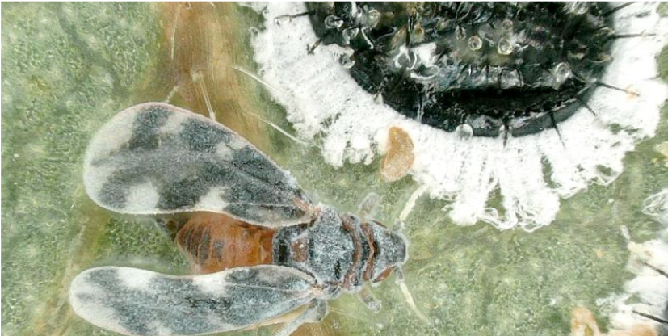
Aleurocanthus spiniferus, l’aleurode épineux du citronnier (photo J.-C. Streito/INRAE).
En avril 2023, une habitante du Gard, Émilie Mendes, observe un insecte inconnu dans son jardin et prend de photos. Elle identifie le spécimen comme appartenant au genre Aleurocanthus. Elle poste alors ses photos sur le site web de l’inventaire national du patrimoine naturel (INPN https://inpn.mnhn.fr/accueil/participer/inpn-especes). Ce site héberge des jeux de données issus des sciences participatives qui sont ensuite évalués par des réseaux d’experts. C’est Jean-Claude Streito entomologiste INRAE qui découvre la photographie et valide l’identification. Sachant que le genre Aleurocanthus contient plusieurs espèces de ravageurs réglementés, il demande des photographies supplémentaires qui lui permettent de confirmer le diagnostic puis la direction générale de l’alimentation du ministère de l’agriculture et de la souveraineté alimentaire est informée à la fin du mois de mai 2023 de la présence probable d’A. spiniferus en France.
Ce signalement a rapidement donné lieu des échantillonnages complémentaires réalisés par les services officiels puis une confirmation de l’identification par l’ANSES. Le ministère a ensuite déclenché les procédures réglementaires destinées à contrôler l’espèce : 1) investigation des sources possibles d’introduction 2) évaluation de la répartition réelle de l’organisme 3) désinfection des plantes destinées à la circulation pour empêcher une propagation de l’organisme nuisible 4) quantification des dommages non signalés aux cultures et autres espèces végétales du territoire 5) sensibilisation des acteurs et des citoyens. Cet exemple illustre l’importance de la contribution des citoyens à la détection précoce des organismes exotiques envahissants. Si la validation par les scientifiques experts est ensuite indispensable, c’est avant tout la réactivité des différents acteurs concernés qui garantit une réponse rapide et une gestion efficace de la situation (Streito et al. 2023).
Les sciences participatives constituent un outil précieux pour suivre l’expansion des espèces envahissantes détecter rapidement l’arrivée d’espèces potentiellement dangereuses pour l’agriculture et la forêt.
Références
Chevassus-au-Louis B., 2007. L’analyse des risques. L’expert, le décideur et le citoyen. Editions Quae, Versailles.
Engel, M.S. et al 2021. The taxonomic impediment: a shortage of taxonomists, not the lack of technical approaches. Zoological Journal of the Linnean Society 193, 381–387. https://doi.org/10.1093/zoolinnean/zlab072
Godefroid, M., Cruaud, A., Streito, J.-C., Rasplus, J.-Y., Rossi, J.-P., 2022. Forecasting future range shifts of Xylella fastidiosa under climate change. Plant Pathology 71, 1839–1848. https://doi.org/10.1111/ppa.13637
Godefroid, M., Meurisse, N., Groenen, F., Kerdelhué, C., Rossi, J.-P., 2020. Current and future distribution of the invasive oak processionary moth. Biological Invasions 22, 523–534.
Guisan, A., Thuiller, W., Zimmermann, N.E., 2017. Habitat suitability and distribution models with applications in R, Ecology, biodiversity and conservation. Cambridge University Press, Cambridge, United Kingdom ; New York, NY.
IPCC, 2014. Climate Change 2014: Impacts, adaptation, and vulnerability. Part A: Global and sectoral aspects. Contribution of working group II to the fifth assessment report of the intergovernmental panel on climate change. Field C.B., Barros V.R., Dokken D.J., Mach K.J., Mastrandrea M.D., Bilir T.E., Chatterjee M., Ebi K.L., Estrada Y.O., Genova R.C., B. Girma, Kissel E.S., Levy A.N., MacCracken S., Mastrandrea P.R., White L.L. (Eds.). Cambridge University Press, Cambridge.
Roques, A. (Ed.), 2015. Processionary Moths and Climate Change: An Update. Springer, Dordrecht.
Rossi J.-P. Garcia J. Rousselet J. 2013. Prendre en compte les arbres ornementaux pour mieux comprendre la perméabilité des paysages à la dispersion des ravageurs. Le cas des arbres hors forêt et de la chenille processionnaire du pin. pp. 469-476. 3e Conférence sur l’entretien des Zones Non Agricoles 15 16 et 17 octobre 2013 ENSAT Toulouse (France).
Rossi, Jean-Pierre, Garcia, J., Roques, A., Rousselet, J., 2016a. Trees outside forests in agricultural landscapes: spatial distribution and impact on habitat connectivity for forest organisms. Landscape Ecology 31, 243–254.
Rossi, J.-P., Imbault, V., Lamant, T., Rousselet, J., 2016b. A citywide survey of the pine processionary moth Thaumetopoea pityocampa spatial distribution in Orléans (France). Urban Forestry & Urban Greening 20, 71–80.
Rossi, J.-P., Godefroid, M., Burban, C., Chartois, M., Mesmin, X., Farigoule, P., Streito, J.-P., Cruaud, A., Rasplus, J.-Y., 2019. Evaluer le risque associé à des agents phytopathogènes émergents transmis par des insectes : le cas de Xylella fastidiosa. Innovations Agronomiques 77, 87-97. https://doi.org/10.15454/PFZ7-K907
Rossi, J.-P., Rasplus, J.-Y., 2023. Climate change and the potential distribution of the glassy-winged sharpshooter (Homalodisca vitripennis), an insect vector of Xylella fastidiosa. Science of The Total Environment 860, 160375. https://doi.org/10.1016/j.scitotenv.2022.160375
Streito, J.-C., Chartois, M., Pierre, É., Dusoulier, F., Armand, J.-M., Gaudin, J., Rossi, J.-P., 2021. Citizen science and niche modeling to track and forecast the expansion of the brown marmorated stinkbug Halyomorpha halys (Stål, 1855). Scientific Reports 11, 11421.
Streito, J.-C., Mendes, E., Sanquer, E., Strugarek, M., Ouvrard, D., Robin-Havret, V., Poncet, L., Lannou, C., Rossi, J.-P., 2023. Incursion Preparedness, Citizen Science and Early Detection of Invasive Insects: The Case of Aleurocanthus spiniferus (Hemiptera, Aleyrodidae) in France. Insects 2023, 14, 916
Streito, J.-C., Papaix, J., Chartois, M., Botella, C., Pierre, É., Armand, J.-M., Gaudin, J., Rossi, J.-P., 2023. Les citoyens, sentinelles de la surveillance phytosanitaire?, in: Crises Sanitaires En Agriculture: Les Espèces Invasives Sous Surveillance. QUAE, pp. 151–163.
Urvois, T., Perrier, C., Roques, A., Sauné, L., Courtin, C., Kajimura, H., Hulcr, J., Cognato, A. I., Auger-Rozenberg, M.-A., Kerdelhué, C. 2023. The worldwide invasion history of a pest ambrosia beetle inferred using population genomics. Molecular Ecology, 32, 4381–4400. https://doi.org/10.1111/mec.16993
Urvois, T., Auger-Rozenberg, M.A., Roques, A.,Kerdelhue, C., Rossi, J.P. 2024. Intraspecific niche models for the invasive ambrosia beetle Xylosandrus crassiusculus suggest contrasted responses to climate change. Oecologia. Sous presse.